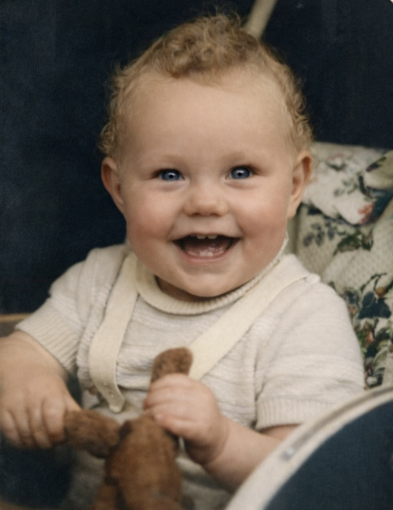
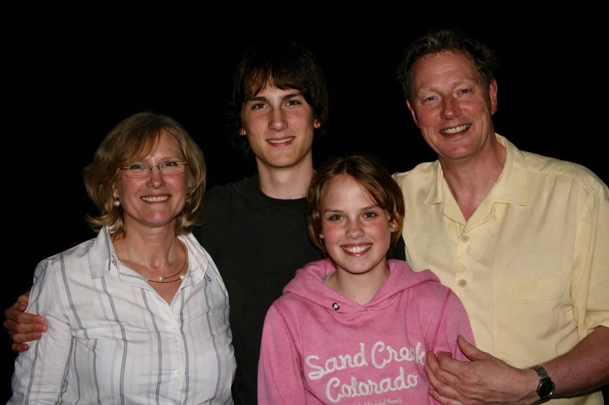
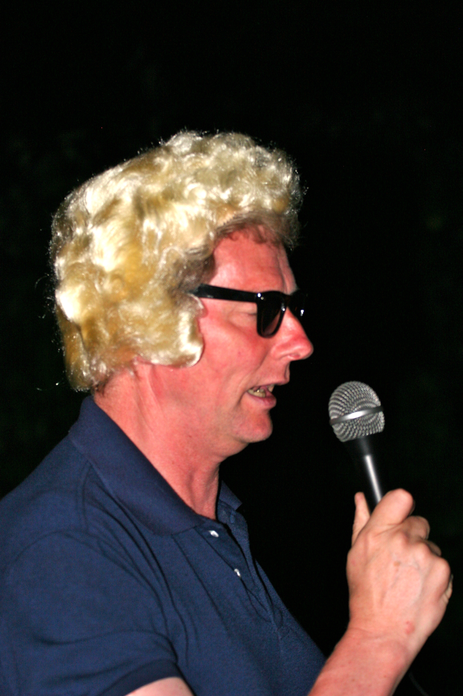

Echte Worte. Echte Songs.
Lothar Schweigerer
Erinnerungen und Geschichten.
Vergangenheit
Orte, Stimmen, Gerüche und Momente, die geblieben sind.
Kindheit

Jugend

Arbeit & Leben

Studium in Gießen (1973 bis 1980)
Hier entsteht nach und nach die Geschichte meines beruflichen Weges.
Forschung in Gießen (1980 bis 1984)
Erinnerungen an die ersten wissenschaftlichen Schritte.
Forschung in San Francisco (1984 bis 1987)
Eine prägende Zeit zwischen Wissenschaft, Aufbruch und neuer Welt.
Facharztausbildung in Heidelberg (1987 bis 1994)
Jahre intensiven Lernens und großer persönlicher Entwicklung.
Oberarzt in Marburg (1994 bis 1997)
Verantwortung übernehmen und eigene Wege finden.
Oberarzt in Essen (1997 bis 2002)
Neue Herausforderungen und wichtige Begegnungen.
Chefarzt und Ordinarius in Göttingen (2002 bis 2006)
Zwischen Medizin, Wissenschaft und Führung.
Chefarzt in Berlin (2006 bis 2019)
Eine lange und prägende Phase meines beruflichen Lebens.
Chefarzt in Frankfurt / Oder (2019 bis 2021)
Ein später beruflicher Neuanfang.
Berater bei Medudoc (2021 bis 2025)
Neue Perspektiven auf Medizin und Gesundheitssystem.
Liebe, Familie, Verluste

Menschen, die wichtig waren
Hier geht es um Nähe, Beziehungen und Abschiede.
Um das, was trägt — und das, was fehlt.
Musik und Schreiben

Wie alles begann
Irgendwann wurden Gedanken zu Worten — und Worte zu Liedern.
Es war kein Plan, sondern ein Bedürfnis.
Was geblieben ist

Ein Blick zurück
Wenn ich zurückblicke, sehe ich viele Wege.
Nicht alles ist geblieben — aber manches trägt bis heute.